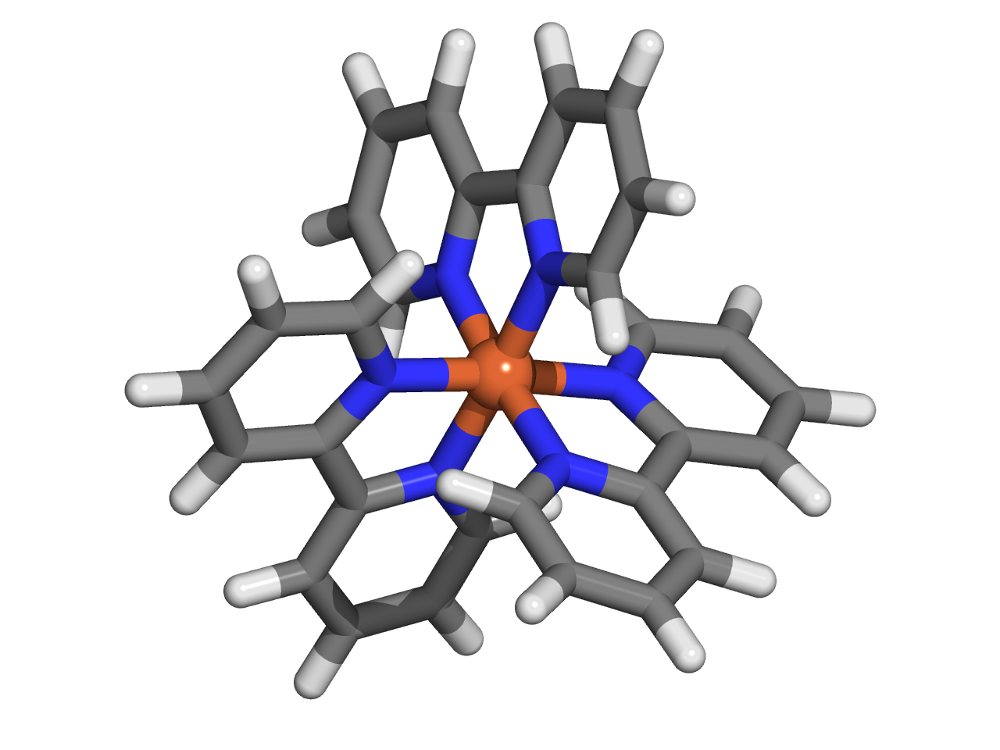
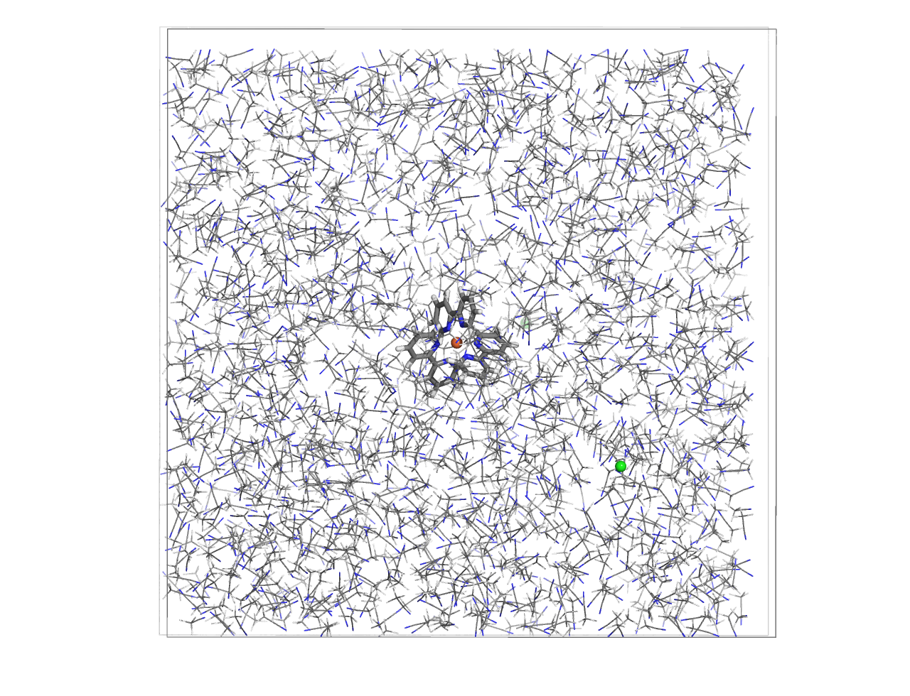

Tutorial for Force Field Generation of Organometallic Compounds
This tutorial illustrates how to automate the force field generation for organometallic compounds using AutoSolvate via the command line interface (CLI). We will cover three systems: Fe(bpy)3 in water, Fe(bpy)3 in acetonitrile, and Fe(bpy)3 in DMSO.
Prerequisites
Before starting, ensure you have AutoSolvate and all necessary dependencies installed. You will also need the organometallic compound’s .xyz file for each molecule. Place each molecule in its own directory to prevent file overwriting. Quantum mechanics software such as Gaussian, Orca, or GAMESS-US is required for quantum mechanical calculations needed for force field parameterization.
{kind=link}
You can download the necessary xyz file here:
Febpy3.xyz
Example 1: Fe(bpy)3 in Water
Command Line Execution
Execute the following command to generate the force field for Fe(bpy)3 in water: Autosolvate will use the default values for other options
autosolvate boxgen_metal -m Febpy3.xyz -k 2 -u 1 -e orca -y 32 -d /opt/orca/5.0.2/orca -s water
Parameters:
-m: Path to the .xyz file-k: Charge of the metal atom-u: Spin multiplicity of the compound-e: Quantum mechanics software to use (gau, orca, gms)-y: Number of processors for the QM calculation-d: Path to the QM software executable-s: Solvent type
Note
You can use the following script to submit this job on a compute node. Below, we provide an example of a job submission script for a SLURM workload manager system. Please adjust the script parameters to fit your specific system configuration.
#!/bin/bash
#SBATCH --time=144:00:00
#SBATCH --partition=week-long
#SBATCH --nodes=1
#SBATCH --mem=4G
#SBATCH --ntasks=32 ### make sure that the number of nprocs is the same with the '-y' option
#SBATCH --cpus-per-task=1
#SBATCH --partition=cpuq
echo $HOSTNAME
echo $SLURM_SUBMIT_DIR
echo $SLURM_SUBMIT_HOST
echo $SLURM_JOB_ID
module load orca/5.0.2 ### load the module of QM software applied for QM calculation
autosolvate boxgen_metal -m Febpy3.xyz -k 2 -u 1 -e orca -y 32 -d /opt/orca/5.0.2/orca -s water
Expected Output
When AutoSolvate runs, the following messages will be printed on your screen, indicating the start of the module to generate solvent boxes and force field parameters:
AutoSolvate is starting in command line mode!
Running the module to generate solvent box and force field parameters for organometallic compounds.
When the following messages are printed on your screen, it indicates that all the files required for MCPB.py are generated:
******************** start to generate inputs for MCPB.py -s 1 ********************
antechamber was processed to generate mol2 file, now checking LG0_antechamber_generate_mol2.log
antechamber was processed to generate mol2 file, now checking LG1_antechamber_generate_mol2.log
antechamber was processed to generate mol2 file, now checking LG2_antechamber_generate_mol2.log
Febpy3_final.pdb is generated
add_bonded pairs 1-2 1-13 1-22 1-33 1-42 1-53
FE.mol2 is generated
LG0.mol2 is generated
LG1.mol2 is generated
LG2.mol2 is generated
LG0.frcmod is generated
LG1.frcmod is generated
LG2.frcmod is generated
charge assigned for each ligand:
FE 2
LG0 0
LG1 0
LG2 0
******************** Finish generating inputs for MCPB.py -s 1 ********************
Next, QM calculations for orca_small_opt orca_small_fc orca_large_mk start, if a calculation is finished, the next will start
******************** start to QM calculations for orca_small_opt orca_small_fc orca_large_mk ********************
Next to submit Freq calculation
ORCA opt terminated normally
Freq calculation is finished, start to run QM charge calculation
ORCA opt terminated normally
start to run charge calculation
When all QM calculations converge, parameters for force field will be generated. solvated box are packed when the screen shows:
******************** start to generate the solvated box******************
******************** Autosolvate successfully generates Febpy3_solvated.prmtop ********************
The output files generated throughout the process will be listed in your directory, confirming the success of the computations and parameter generation.
autosolvate.log Febpy3_mcpbpy.frcmod Febpy3_solv.prmtop LG0.smi LG2.smi
bondinfo.in Febpy3_mcpbpy.pdb Febpy3_standard.fingerprint LG0_temp.pdb LG2_temp.pdb
bondinfo_output.txt Febpy3_mcpbpy_pre.frcmod Febpy3_standard.pdb LG0.xyz LG2.xyz
esp_gen.log Febpy3_small_fc.com Febpy3_temp.pdb LG1_antechamber_generate_mol2.log MCPB_1.log
esp.xyz Febpy3_small_fc.inp Febpy3_tleap_check.in LG1_FE.xyz MCPB_2.log
FE1.mol2 Febpy3_small_fc.orca Febpy3_tleap_check.out LG1.frcmod MCPB_4.log
Febpy3_dry.inpcrd Febpy3_small_fc.orca.densities Febpy3_tleap.in LG1.mol2 mcpbpy_parmed.in
Febpy3_dry.pdb Febpy3_small_fc.orca.gbw Febpy3.xyz LG1_obabel_smi.log missingbonds.txt
Febpy3_dry.prmtop Febpy3_small_fc.orca.hess FE.mol2 LG1___.pdb orca.sh
Febpy3_final_nonprot.pdb Febpy3_small_fc.orcaout FE.pdb LG1__.pdb output.all
Febpy3_final.pdb Febpy3_small_fc.orca_property.txt FE_temp.pdb LG1_.pdb parmed.out
Febpy3_final_renum.txt Febpy3_small_opt.com FE.xyz LG1.pdb resp1_calc.esp
Febpy3_final_sslink Febpy3_small_opt.inp genmetalmol2.py LG1.sdf resp1.chg
Febpy3_final.xyz Febpy3_small_opt.orca L01.mol2 LG1_sdf.log resp1.in
Febpy3.info Febpy3_small_opt.orca.densities L11.mol2 LG1.smi resp1.out
Febpy3_large.fingerprint Febpy3_small_opt.orca.engrad L21.mol2 LG1_temp.pdb resp1.pch
Febpy3_large_mk.com Febpy3_small_opt.orca.gbw leap_add_solventbox.cmd LG1.xyz resp2_calc.esp
Febpy3_large_mk.inp Febpy3_small_opt.orca.opt leap.log LG2_antechamber_generate_mol2.log resp2.chg
Febpy3_large_mk.orca Febpy3_small_opt.orcaout LG0_antechamber_generate_mol2.log LG2_FE.xyz resp2.in
Febpy3_large_mk.orca.densities Febpy3_small_opt.orca_property.txt LG0_FE.xyz LG2.frcmod resp2.out
Febpy3_large_mk.orca.esp Febpy3_small_opt.orca_trj.xyz LG0.frcmod LG2.mol2 resp2.pch
Febpy3_large_mk.orcaespout Febpy3_small_opt.orca.xyz LG0.mol2 LG2_obabel_smi.log respinputgen.log
Febpy3_large_mk.orca.gbw Febpy3_small.pdb LG0_obabel_smi.log LG2___.pdb slurm-332789.out
Febpy3_large_mk.orca.K.tmp Febpy3_small.res LG0___.pdb LG2__.pdb sqm.in
Febpy3_large_mk.orcaout Febpy3_solvated.inpcrd LG0__.pdb LG2_.pdb sqm.out
Febpy3_large_mk.orca_property.txt Febpy3_solvated.pdb LG0_.pdb LG2.pdb sqm.pdb
Febpy3_large.pdb Febpy3_solvated.prmtop LG0.pdb LG2_pdb4amber.log tleap.log
Febpy3_MCPB.in Febpy3_solv.inpcrd LG0.sdf LG2.sdf tleap_MCPB.log
Febpy3_MCPB_orca.in Febpy3_solv.pdb LG0_sdf.log LG2_sdf.log
Checking the Final Output
Febpy3_dry.prmtop is the prmtop file of the single compound
The final step involves checking the generated parameter files, specifically the .pdb file containing the coordinates for the solute in the solvent box. You want to ensure that both the solvent and the solute are correctly placed.
{kind=link}
Now, with the Febpy3_solvated.inpcrd, Febpy3_solvated.prmtop, and Febpy3_solvated.pdb files, you are fully equipped to proceed to the molecular dynamics simulations.
Example 2: Fe(bpy)3 in acetonitrile
Command Line Execution
Execute the following command to generate the force field for Fe(bpy)3 in acetonitrile: Autosolvate will use the default values for other options
autosolvate boxgen_metal -m Febpy3.xyz -k 2 -u 1 -e orca -y 32 -d /opt/orca/5.0.2/orca -s acetonitrile
The rest steps are the same with Example 1.
Example 3: Fe(bpy)3 in DMSO
Command Line Execution
Execute the following command to generate the force field for Fe(bpy)3 in DMSO:
Autosolvate will use the default values for other options
for more details about generate the force field for Fe(bpy)3 in customized solvents such as DMSO, users could refer to the advanced tutorial advancedTutorial.rst
autosolvate boxgen_metal -m Febpy3.xyz -k 2 -u 1 -e orca -y 32 -d /opt/orca/5.0.2/orca -l dmso.off -p dmso.frcmod -s d
The rest steps are the same with Example 2.
Example 4: Fe(bpy)3 in water with M mode to assign charges
During the file preparation for MCPB.py step 1, the automatic mode of ligand-charge assignment is applicable only when the organic ligands do not exhibit any spin multiplicity. Autosolvate also provides a manual mode for assigning formal charges
autosolvate boxgen_metal -m Febpy3.xyz -k 2 -u 1 -e orca -y 32 -d /opt/orca/5.0.2/orca -s water -v M -f charge.txt
Parameters:
-v: M means manual mode for ligand’s charge assignment-f: txt file of charge for each ligand
an example of charge.txt for -f opition.
LG0 0
LG1 0
LG2 0